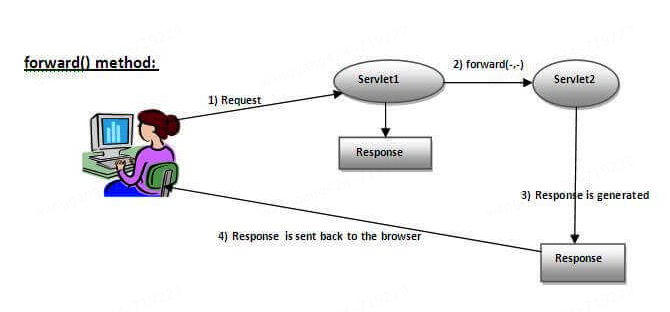
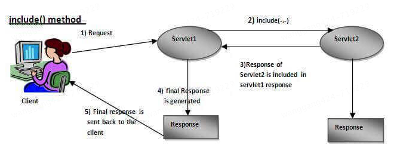
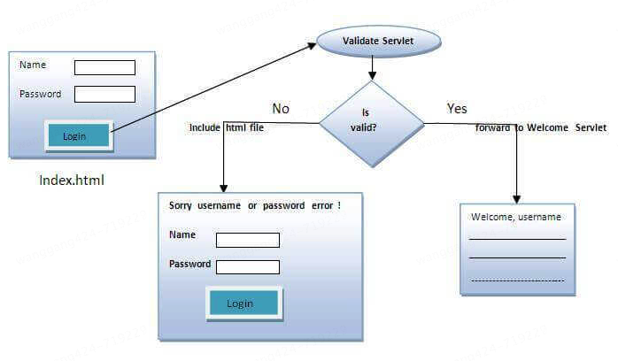
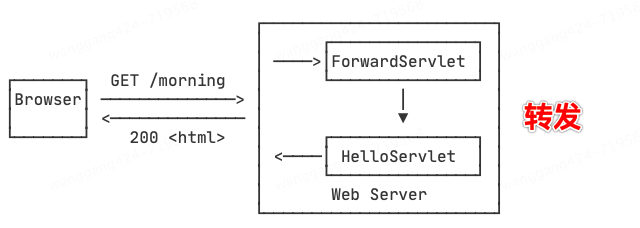
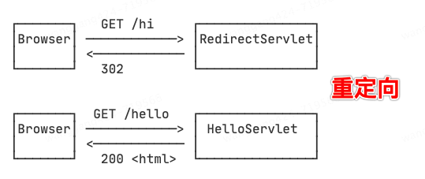

本书作者：测试开发刚哥，文章版权归个人所有，未经授权请勿转载。
请求分发
Servlet 的 RequestDispatcher 接口定义：
package javax.servlet;
import java.io.IOException;
public interface RequestDispatcher {
String FORWARD_REQUEST_URI = "javax.servlet.forward.request_uri";
String FORWARD_CONTEXT_PATH = "javax.servlet.forward.context_path";
String FORWARD_PATH_INFO = "javax.servlet.forward.path_info";
String FORWARD_SERVLET_PATH = "javax.servlet.forward.servlet_path";
String FORWARD_QUERY_STRING = "javax.servlet.forward.query_string";
String INCLUDE_REQUEST_URI = "javax.servlet.include.request_uri";
String INCLUDE_CONTEXT_PATH = "javax.servlet.include.context_path";
String INCLUDE_PATH_INFO = "javax.servlet.include.path_info";
String INCLUDE_SERVLET_PATH = "javax.servlet.include.servlet_path";
String INCLUDE_QUERY_STRING = "javax.servlet.include.query_string";
String ERROR_EXCEPTION = "javax.servlet.error.exception";
String ERROR_EXCEPTION_TYPE = "javax.servlet.error.exception_type";
String ERROR_MESSAGE = "javax.servlet.error.message";
String ERROR_REQUEST_URI = "javax.servlet.error.request_uri";
String ERROR_SERVLET_NAME = "javax.servlet.error.servlet_name";
String ERROR_STATUS_CODE = "javax.servlet.error.status_code";
void forward(ServletRequest var1, ServletResponse var2) throws ServletException, IOException;
void include(ServletRequest var1, ServletResponse var2) throws ServletException, IOException;
}
它有 2 个方法，forward 和 include：
- public void forward(ServletRequest request,ServletResponse response)throws ServletException,java.io.IOException: Forwards a request from a servlet to another resource (servlet, JSP file, or HTML file) on the server.
- public void include(ServletRequest request,ServletResponse response)throws ServletException,java.io.IOException: Includes the content of a resource (servlet, JSP page, or HTML file) in the response.
forward 方法将请求从一个 Servlet 转发到另一个资源（Servlet、JSP 页面或 HTML 文件）。转发后，客户端的 URL 不会改变，且请求和响应对象在转发过程中保持不变。使用场景：
- 在服务器内部资源之间传递请求
- 需要在处理请求时共享相同的请求和响应对象

include 方法将另一个资源的内容包含到当前响应中。与 forward 不同，include 不会终止当前 Servlet 的执行，而是将目标资源的输出包含在当前响应中。使用场景：
- 在生成响应时需要包含其他资源的内容
- 需要在一个页面中动态地插入其他资源的内容

代码实践
通过登录页面，输入用户名和密码，如果密码是 servlet，forward 到 welcome servlet，否则 include 到登录页面，展示错误信息。

login.html 获取用户输入
<form action="go" method="get">
Name:<input type="text" name="userName"/><br/>
Password:<input type="password" name="userPass"/><br/>
<input type="submit" value="login"/>
</form>
Simple.java Servlet 类，如果密码是 servlet，forward 到 welcome servlet
import javax.servlet.RequestDispatcher;
import javax.servlet.ServletException;
import javax.servlet.http.HttpServlet;
import javax.servlet.http.HttpServletRequest;
import javax.servlet.http.HttpServletResponse;
import java.io.IOException;
import java.io.PrintWriter;
public class Simple extends HttpServlet {
public void doGet(HttpServletRequest request, HttpServletResponse response)
throws ServletException, IOException {
response.setContentType("text/html");
PrintWriter out = response.getWriter();
String p = request.getParameter("userPass");
if (p.equals("servlet")) {
RequestDispatcher rd = request.getRequestDispatcher("welcome");
rd.forward(request, response);
} else {
out.print("Sorry username or password error!");
RequestDispatcher rd = request.getRequestDispatcher("login.html");
rd.include(request, response);
}
}
}
WelcomeServlet.java Servlet 类，返回 welcome 信息
import javax.servlet.ServletException;
import javax.servlet.http.HttpServlet;
import javax.servlet.http.HttpServletRequest;
import javax.servlet.http.HttpServletResponse;
import java.io.IOException;
import java.io.PrintWriter;
public class WelcomeServlet extends HttpServlet {
public void doGet(HttpServletRequest request, HttpServletResponse response)
throws ServletException, IOException {
response.setContentType("text/html");
PrintWriter out = response.getWriter();
String n = request.getParameter("userName");
out.print("Welcome " + n);
}
}
web.xml 部署描述文件，servlet 信息
<?xml version="1.0" encoding="UTF-8"?>
<web-app version="2.5"
xmlns="http://java.sun.com/xml/ns/javaee"
xmlns:xsi="http://www.w3.org/2001/XMLSchema-instance"
xsi:schemaLocation="http://java.sun.com/xml/ns/javaee
http://java.sun.com/xml/ns/javaee/web-app_2_5.xsd">
<servlet>
<description>This is the description of my J2EE component</description>
<display-name>This is the display name of my J2EE component</display-name>
<servlet-name>Simple</servlet-name>
<servlet-class>Simple</servlet-class>
</servlet>
<servlet>
<description>This is the description of my J2EE component</description>
<display-name>This is the display name of my J2EE component</display-name>
<servlet-name>WelcomeServlet</servlet-name>
<servlet-class>WelcomeServlet</servlet-class>
</servlet>
<servlet-mapping>
<servlet-name>Simple</servlet-name>
<url-pattern>/go</url-pattern>
</servlet-mapping>
<servlet-mapping>
<servlet-name>WelcomeServlet</servlet-name>
<url-pattern>/welcome</url-pattern>
</servlet-mapping>
<welcome-file-list>
<welcome-file>login.html</welcome-file>
</welcome-file-list>
</web-app>
web.xml 在低版本 Servlet 是必须的，在高版本 Servlet 已经不再需要。
注意 Simple.java 的 else 逻辑：
out.print("Sorry username or password error!");
RequestDispatcher rd = request.getRequestDispatcher("login.html");
rd.include(request, response);
如果把这里的 include 改为 forward，会发生什么？输出内容不会显示，因为 forward 方法会将控制权转交给 login.html，并且 login.html 的内容将替代当前响应内容。
总结，用 include 方法时，当前 Servlet 的输出内容会保留，并且目标资源的内容会被包含在当前响应中。使用 forward 方法时，当前 Servlet 的执行将终止，控制权将交给目标资源，目标资源的内容将替代当前响应内容。
重定向
我们在浏览器看到的 302，就是重定向。通常在重定向后，会自动发起新的 HTTP 请求。
HttpServletResponse 接口的 sendRedirect 方法：
void sendRedirect(String var1) throws IOException;
示例：
import javax.servlet.ServletException;
import javax.servlet.http.HttpServlet;
import javax.servlet.http.HttpServletRequest;
import javax.servlet.http.HttpServletResponse;
import java.io.IOException;
public class MySearcher extends HttpServlet {
protected void doGet(HttpServletRequest request, HttpServletResponse response)
throws ServletException, IOException {
String name = request.getParameter("name");
response.sendRedirect("https://www.google.co.in/#q=" + name);
}
}
forward 和 sendRedirect 的区别如下：


-
forward 是在服务端，sendRedirect 是在客户端
-
forward 发送相同的 request 和 response 对象给另一个 servlet，sendRedirect 总是生成新的 request 和 response 对象
-
forward 只能在服务器内部，sendRedirect 可以跨不同 Web 应用或服务器
总结，forward 适用于服务器内部资源之间的请求转发，效率较高，客户端 URL 不变。sendRedirect 适用于通知客户端资源位置改变或跨 Web 应用/服务器的请求转发，客户端 URL 会改变，有额外的网络开销。
参考资料：
https://www.javatpoint.com/requestdispatcher-in-servlet
https://www.javatpoint.com/sendRedirect()-method
https://www.liaoxuefeng.com/wiki/1252599548343744/1328761739935778